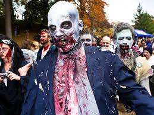

Le mort vivant communément appelé ZOMBIE d'apparence humaine est dans la plupart des cas une personne morte ramené à la vie via virus/sorcellerie. Bien que l'on pourrait se poser la question de savoir si il a sa place ou non dans le bestiaire, la réponse est oui car malgres son apparence humaine il ne possede aucune autre caractéristique de l'humain car ce qui différencie un humain d'un animal c'est sa pensé, le zombie n'en possédant aucune il a alors bien sa place dans ce bestiaire Le terme est souvent utilisé pour décrire un individu hypnotisé manquant de conscience mais encore capable de réagir à des stimuli environnementaux. Depuis le 19e siècle, les zombis ont établi une popularité notable, en particulier dans les folklores européens et américains. Une nuance importante doit cependant être faite entre deux acceptions du zombie. La première, la plus ancienne, désigne les cadavres de revenants, souvent ressuscités par l'intermédiaire de sciences occultes et manipulés par un sorcier. La seconde, plus récente, désigne en fait des personnes vivantes mais contaminées par une maladie ou un élément chimique qui leur donne l'apparence du mort-vivant, pourrissant debout, se trouvant dépourvu d'intelligence et recherchant continuellement la chair des vivants. Leur état est mieux explicable médicalement, mais ils sont souvent davantage incontrôlables1, et surtout, bien plus nombreux, les fictions mettant généralement en scène une poignée de héros face à des hordes innombrables de zombies. De nombreux jeux/films en ont fait leur theme et ont dérivé la forme du zombi lui enlevant l'aspect humain et faisant de lui une chose difforme assembler avec des morceaux de chairs.
